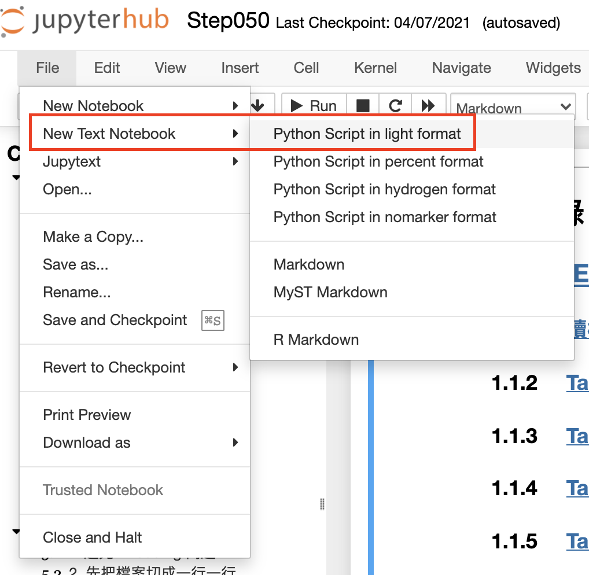
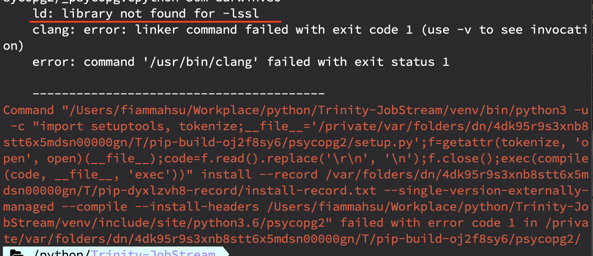
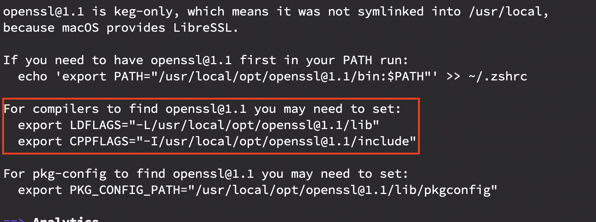

Python 的基礎 - Package 的使用與安裝 1¶
首先介紹 Package / Module 的使用¶
要使用別人寫好的 Package / Module
就是直接
import PACKAGE_NAME / MODULE_NAME
Note
Python 的 import 有個很基本的準則，『只要用到別的.py 檔案，就一定要引述他』
只要不同檔案就要『引述』
並沒有像 java 的 class 那樣『同一個資料夾下』或『同一層』
最常用到的 比如 os 、 sys 、 math 等等
就拿 math 來做範例
import math
之後我們就能夠使用 math 中的好用 function
比如 取進位值的 math.ceil
math.ceil(x)
import math
print(math.ceil(1.4))
print(math.ceil(5.3))
print(math.ceil(-5.3))
print(math.ceil(22.6))
print(math.ceil(10.0))
Import 裡面的小彩蛋¶
如果對於 import 的 .py 檔案在哪裡有疑問的話
可以先這樣做
import sys
for p in sys.path:
print(p)
除了 IPython 是 Jupyter 專用的東西以外
其他的路徑就是 python 尋找那些額外安裝的 Package 的路徑
在其中會有一隻 this.py 的檔案，就是小彩蛋
可以打開來看一下，如果你拿不到（我們的 NoteBook Server 有相關權限）
可以直接看下面
s = """Gur Mra bs Clguba, ol Gvz Crgref
Ornhgvshy vf orggre guna htyl.
Rkcyvpvg vf orggre guna vzcyvpvg.
Fvzcyr vf orggre guna pbzcyrk.
Pbzcyrk vf orggre guna pbzcyvpngrq.
Syng vf orggre guna arfgrq.
Fcnefr vf orggre guna qrafr.
Ernqnovyvgl pbhagf.
Fcrpvny pnfrf nera'g fcrpvny rabhtu gb oernx gur ehyrf.
Nygubhtu cenpgvpnyvgl orngf chevgl.
Reebef fubhyq arire cnff fvyragyl.
Hayrff rkcyvpvgyl fvyraprq.
Va gur snpr bs nzovthvgl, ershfr gur grzcgngvba gb thrff.
Gurer fubhyq or bar-- naq cersrenoyl bayl bar --boivbhf jnl gb qb vg.
Nygubhtu gung jnl znl abg or boivbhf ng svefg hayrff lbh'er Qhgpu.
Abj vf orggre guna arire.
Nygubhtu arire vf bsgra orggre guna *evtug* abj.
Vs gur vzcyrzragngvba vf uneq gb rkcynva, vg'f n onq vqrn.
Vs gur vzcyrzragngvba vf rnfl gb rkcynva, vg znl or n tbbq vqrn.
Anzrfcnprf ner bar ubaxvat terng vqrn -- yrg'f qb zber bs gubfr!"""
d = {}
for c in (65, 97):
for i in range(26):
d[chr(i+c)] = chr((i+13) % 26 + c)
print("".join([d.get(c, c) for c in s]))
接著我們試試看 import this
會發現他幫你印出了一個叫做 The Zen Of Python 的文章，大致的主題是整個 Python 語言的良好寫作方式
你應該會好奇，為什麼只是 import 會打出這些文章
實際上 import 做的事情，是幫你執行該.py檔案
所以 this.py 裡最下面的那些會被執行
試玩一下 import¶
若使用本機的 Jupyter Notebook 的話
就手動建一個 py 檔案
用 Notebook Server 的話
請使用

來建立 py 檔
Note
我們的 NoteBook Server 有額外裝 NB Extension
這邊使用的 Extension 為 Jupytext
一般 Jupyter Notebook 會把 py 檔案當成文字檔
之後我們隨意寫一些 變數 、 Function 來給我們 import
使用 def
Python 建立 Function （ Method ）
def FUNCTION_NAME(args):
answer = args + SOMETHING
return answer
answer = FUNCTION_NAME(args1)
接下來 import PY 檔
import lib
print(lib.var)
ab = 3
print(lib.function(3))
安裝額外 Package¶
其實一開始我們安裝 jupyter notebook 時，就是安裝額外 Package了
這邊我們要裝一個，我目前認為最難安裝起來的 Package了
沒錯，就是 psycopg2
先來下安裝指令吧
pip install psycopg2
或
pip3 install psycopg2
Note
使用本機的人，可以試試看
如果是用我們的 Notebook Server 可以先不用
會有權限讓你無法安裝 （雖然可以用 --user 來 pass error）
也可以先看看這個錯誤到底是什麼
等等我會一次安裝給 Notebook Server 的人來用
MacOS通常遇到的問題
如果是 Windows 應該不太有問題
如果是 MacOS(UNIX Like) 的才會遇到以下兩種
pg_config Problem
openssl Problem (MacOS)
第一點比較好解決，只需要安裝 PostgreSQL 或 libpq-dev 就好
MacOS 建議裝 PostgreSQL 會比較沒問題 我沒試過只裝 libpq
brew install postgresql@9.6
會安裝 9.6 PostgreSQL
第二點比較麻煩一點，錯誤訊息比較難辨認，大概會有這種訊息出現

這個時候，請安裝 OpenSSL
brew install openssl
安裝完的畫面如下

如圖中所示，將兩個環境變數加到 .bash_profile 或 .zshrc
export LDFLAGS="-L/usr/local/opt/openssl@1.1/lib"
export CPPFLAGS="-I/usr/local/opt/openssl@1.1/include"
再重新安裝 psycopg2 應該就沒問題了
安裝後測試¶
有兩個方法可以確認是否安裝完成
第一種： 確認 pip Package
pip3 show psycopg2
這種方法確認 「 pip 有正確安裝 」
第二種： 確認 import
python3 -c 'import psycopg2'
這種方法確認 「 安裝後能夠正確運行 」
有時候雖然正確安裝，但無法正確執行
通常會是環境問題 e.g. MacOS OpenSSL 新舊版本差異造成的錯誤
我通常都用第二種
psycopg2 基礎使用¶
不多說，實際連線到我們的 Trinity Repository 裡面瞧瞧
Trinity Server INFO
Host = 10.140.0.2
Port = 5432
DB Name = trinity
User Name = trinity
Password = trinity
import psycopg2
# 連線 94 這麼簡單
connection = psycopg2.connect(host='10.140.0.2', dbname='trinity', user='trinity', password='trinity')
# Create Cursor
cursor = connection.cursor()
# 三個單引號 --> String
sql = """
select b2.busentityname, j2.categoryname, j.jobname
from job j
left join jobcategory j2 on j.categoryuid = j2.categoryuid
left join busentitycategory b on j.categoryuid = b.categoryuid
left join busentity b2 on b.busentityuid = b2.busentityuid
where j.activate = '1'
and b2.busentityname = 'Z_COSMED'
and j2.categoryname = 'EXT'
"""
# 執行 SQL
cursor.execute(sql)
# cursor object is iterable
for rs in cursor:
print(rs)
cursor 有些小知識
from Psycopg2 Doc
When a database query is executed, the Psycopg cursor usually fetches all the records returned by the backend, transferring them to the client process. If the query returned an huge amount of data, a proportionally large amount of memory will be allocated by the client.
根據 psycopg2 文件中所述
cursor 執行 SQL 後， 所有 result data 會被傳輸至 Client 端
所以會吃 記憶體
這其實有點危險
比如我們的 NoteBook Server 大家 Share 同一台 Server Machine Resource
這時候如果用這個，容易佔據大量資源
這時候， Server-Side Cursor 就可以解決這個問題
透過控制每次 fetch 的數量，預設上是每次遞迴約 2000 筆
# Server-side Cursor
server_cursor = connection.cursor('Jupyter')
可以看到每一筆資料的長相
大概是這樣 每一筆
BUSENTITY_NAME CATEGORY_NAME JOB_NAME
Z_COSMED EXT JOBNAME
Note
可以發現，回傳的資料每筆都是 Tuple 型態
所以剛才的 rs，就可以像 List 一樣使用 Index 來找指定元素
# 重新執行 SQL
cursor.execute(sql)
# cursor object is iterable
for rs in cursor:
print('Business Entity : {}'.format(rs[0]))
print('Category Name : {}'.format(rs[1]))
print('Job Name : {}'.format(rs[2]))
print('==================')